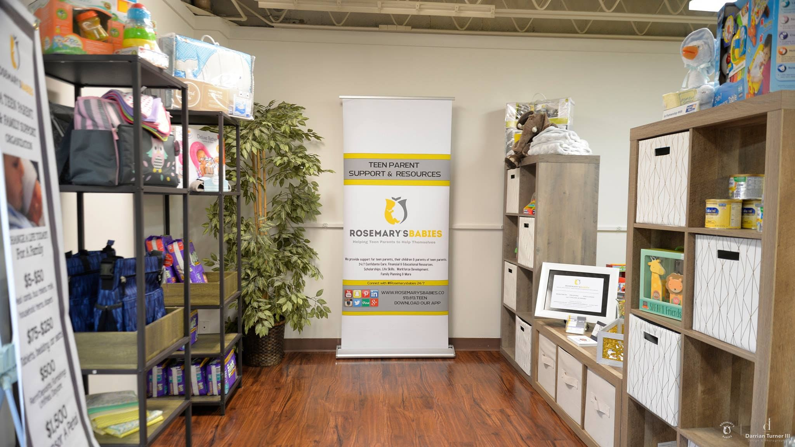

Petals Pantry & Boutique
Clothing insecurity impacts lives in a major way from a child not having boots, socks, or a winter coat. 10-15% of family income is spent on clothing. While there are resources for housing and food; there is none for clothing. The results of lacking the basic essentials to purchase or launder clothing: drop out, low self-esteem, unsafe measures to obtain items including theft.
Rosemary's Babies is addressing this issue by offering support via Petals Pantry & Boutique. We provide items for mom, dad, and baby at no costs to low costs. Most items are new or almost new to ensure parents feel confident and self-respect.
Our pantry carries most baby essentials including blankets, cribs, strollers, diapers, walkers, baby milk, educational toys, clothing, and more. These items change as we receive donations.
Petals Pantry is open Tuesdays & Saturdays by appointment only.
